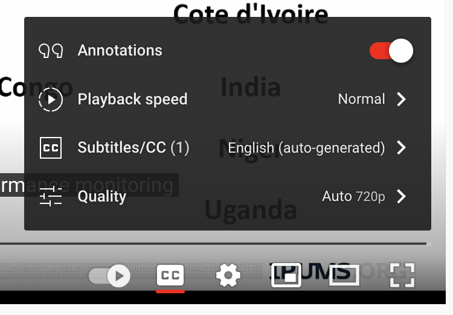

IPUMS and IPUMS PMA offer several Youtube video tutorials covering topics like:
- How to create an account to use IPUMS PMA
- IPUMS PMA Units of Analysis
- How to create an extract using IPUMS PMA
- IPUMS PMA Case Selection Feature
- How IPUMS PMA population expansion weights were created
- Introduction to PMA Longitudinal Data
- Using Female and Service Delivery Point Data Together
These videos have been recorded in English but, as of spring 2022, Youtube now provides automatically generated captions in multiple languages. You’ll find captions available for all videos posted on the IPUMS Youtube channel. Neither the transcription nor the translation are perfect, but because these services are powered by artificial intelligence from Google, we expect their quality to improve over time.
Enable Captions
To turn on captions in your preferred language, click the cog icon
next to the CC button in the bottom-right corner of the
video toolbar.

You can choose between “English (auto-generated)” or “Auto-translate”.

There are several language options available. We’ll choose French.
French captions will appear on the bottom of your video right away.
Transcripts
Captions are great, but sometimes it’s useful to have a full transcript that you can read at your own pace. Fortunately, it’s possible to download a full-text version of these captions with help from the YouTube Transcript API for Python. And, thanks to the reticulate package for R, those of us with little or no Python knowledge can use this tool, too!
Building a Python Environment
To get started, you’ll need to install reticulate if you’ve never done so before:
install.packages("reticulate")
Then, we’ll load it together with tidyverse tools we’ll need for processing the downloaded text.
The YouTube Transcript API is a Python package, which is analogous to an R package you’d normally download from CRAN. With R, your downloaded packages get saved to a library on your computer. For example, here’s the location of my own R library on my Mac:
[1] "/Library/Frameworks/R.framework/Versions/4.2-arm64/Resources/library"Python packages will also be downloaded onto your computer, but it’s not unusual for Python users to have multiple libraries setup for individual projects. Moreover, it’s common to have different versions of Python associated with different projects. This ensures that your old Python projects won’t break when you upgrade to new tools.
Conda is a tool used to
build and maintain Python environments. With reticulate,
you can quickly create a Conda environment with conda_create.
Let’s call our environment pma_env:
conda_create("./pma_env")
This creates a new folder called pma_env in R’s working
directory, and it installs several packages (including the most recent
version of Python and pip, a
Python package installer) in that location.
Next, we’ll tell reticulate to use this environment for the duration of our R session.
use_condaenv("./pma_env")
And finally, we’ll install the YouTube Transcript API (via pip) in our environment.
py_install(packages = "youtube_transcript_api", pip = TRUE)
Using the API
Before we can use the package, we’ll need to import it into R.
import("youtube_transcript_api")
Module(youtube_transcript_api)As an R user, you might expect this to work like the library
function we use to attach R
packages. Instead, R returns an object wrapping a
Module named youtube_transcript_api; if we
look in the R search path, we won’t find anything related to the API.
What’s going on here?
search()
[1] ".GlobalEnv" "package:reticulate" "package:showtext"
[4] "package:showtextdb" "package:sysfonts" "package:here"
[7] "package:RCurl" "package:htmltools" "package:ipumsr"
[10] "package:forcats" "package:stringr" "package:dplyr"
[13] "package:purrr" "package:readr" "package:tidyr"
[16] "package:tibble" "package:ggplot2" "package:tidyverse"
[19] "package:stats" "package:graphics" "package:grDevices"
[22] "package:utils" "package:datasets" "package:methods"
[25] "Autoloads" "package:base" Unlike R packages, Python packages are not attached with import.
Instead, you’ll need to attach them to the Global
Environment. We’ll call this module api:
api <- import("youtube_transcript_api")
An imported Python module works like named list. Each item in the list is a method - a function associated with a particular object.
names(api)
[1] "CookiePathInvalid" "CookiesInvalid"
[3] "CouldNotRetrieveTranscript" "FailedToCreateConsentCookie"
[5] "NoTranscriptAvailable" "NoTranscriptFound"
[7] "NotTranslatable" "TooManyRequests"
[9] "Transcript" "TranscriptList"
[11] "TranscriptsDisabled" "TranslationLanguageNotAvailable"
[13] "VideoUnavailable" "YouTubeRequestFailed"
[15] "YouTubeTranscriptApi" Here, we’ll only need the last method
YouTubeTranscriptApi, so we’ll drop the others from
api.
api <- api$YouTubeTranscriptApi
This method contains three sub-methods:
names(api)
[1] "get_transcript" "get_transcripts" "list_transcripts"To determine what each method does, you’ll need to visit the
documentation page. We’ll focus here on
list_transcripts, which retrieves a full list of all
available transcripts for a certain YouTube video. The
video_id is a character string in the URL for your video
immediately after https://www.youtube.com/watch?v=.
transcript_list <- api$list_transcripts(video_id = "VwjYHDvpHk0")
In fact, transcript_list returns a second layer of
sub-methods:
names(transcript_list)
[1] "build" "find_generated_transcript"
[3] "find_manually_created_transcript" "find_transcript"
[5] "video_id" Among these, we’ll use find_transcript to locate a
transcript associated with the original language spoken in the
video, which is English. (We found this a bit tricky: you must provide
the two-letter language code as a list.)
[1] "fetch" "is_generated" "is_translatable" "language"
[5] "language_code" "translate" "translation_languages" "video_id" Use the fetch method to get the English transcript:
english <- transcript$fetch()
Use the translate method to get automatically translated
transcripts in a language of your choice. We’ll request a French version
like so:
french <- transcript$translate("fr")
french <- french$fetch()
Summary
If you were keeping track, you might have noticed that we had to sort through 5 nested levels of methods to find the function we needed to get an English transcript (and 6 levels for the French transcript).
If you know what you’re looking for, you can chain multiple methods
together with the $ operator. This way, you can import the
API and download both transcripts with just four lines of code:
Explore and Export
Now that we’ve got one english and one
french transcript, we’ll use tidyverse tools to export
them in a reader-friendly format.
The API imports each transcript as a list, where
each list item contains one line of text, a timestamp for
the start of that line, and a code marking its
duration. For example, the very first line in the
english transcript starts 0.64 seconds into the video:
english[[1]]
$text
[1] "this tutorial will show you how to"
$start
[1] 0.64
$duration
[1] 4.4Here is the same line from the french transcript:
french[[1]]
$text
[1] "ce tutoriel vous montrera comment"
$start
[1] 0.64
$duration
[1] 4.4Because of linguistic differences in grammar or syntax, the two transcripts contain a different total number of lines.
Even so, it’s easy align both transcripts together in a table. First,
we’ll use map_dfr to
iteratively transform each english list-item into a tibble
- the dfr suffix places the output in a data frame
(df) rowwise (r).
english <- map_dfr(english, as_tibble)
english
# A tibble: 88 × 3
text start duration
<chr> <dbl> <dbl>
1 this tutorial will show you how to 0.64 4.4
2 access longitudinal panel data on the 2.56 5.12
3 iphone's pma website 5.04 5.84
4 starting in 2019 performance monitoring 7.68 6.00
5 for action adjusted its sampling design 10.9 6.40
6 to create a panel of women aged 15 to 49 13.7 5.76
7 to study contraceptive and fertility 17.3 4.40
8 dynamics over time 19.4 4.40
9 the baseline survey is referred to as 21.7 4.88
10 phase one the first follow-up survey is 23.8 4
# … with 78 more rowsNext, we’ll do the same thing with our french
transcript:
french <- map_dfr(french, as_tibble)
french
# A tibble: 85 × 3
text start duration
<chr> <dbl> <dbl>
1 ce tutoriel vous montrera comment 0.64 4.4
2 accéder aux données longitudinales du panel sur le 2.56 5.12
3 site pma de l'iphone à 5.04 5.84
4 partir de 2019 le suivi des performances 7.68 6.00
5 pour l'action a ajusté son plan d'échantillonnage 10.9 6.40
6 pour créer un panel de femmes âgées de 15 à 49 ans 13.7 5.76
7 afin d'étudier la dynamique de la contraception et de la fécondité au 17.3 4.40
8 fil du temps 19.4 4.40
9 l'enquête de référence est référée en tant que 21.7 4.88
10 phase un, la première enquête de suivi est la 23.8 4
# … with 75 more rowsIf you want to merge the two table together, use full_join
to ensure that all rows from both tables are kept. Just be sure to
change the column text so that it describes the language of
the source table (and relocate columns as you see fit):
output <- full_join(
english %>% rename(english = text),
french %>% rename(french = text),
by = c("start", "duration")
)
output <- output %>% relocate(french, .after = english)
output
# A tibble: 88 × 4
english french start duration
<chr> <chr> <dbl> <dbl>
1 this tutorial will show you how to ce tutoriel vous montrera comment 0.64 4.4
2 access longitudinal panel data on the accéder aux données longitudinales du pa… 2.56 5.12
3 iphone's pma website site pma de l'iphone à 5.04 5.84
4 starting in 2019 performance monitoring partir de 2019 le suivi des performances 7.68 6.00
5 for action adjusted its sampling design pour l'action a ajusté son plan d'échant… 10.9 6.40
6 to create a panel of women aged 15 to 49 pour créer un panel de femmes âgées de 1… 13.7 5.76
7 to study contraceptive and fertility afin d'étudier la dynamique de la contra… 17.3 4.40
8 dynamics over time fil du temps 19.4 4.40
9 the baseline survey is referred to as l'enquête de référence est référée en t… 21.7 4.88
10 phase one the first follow-up survey is phase un, la première enquête de suivi e… 23.8 4
# … with 78 more rowsFrom here, you can use familiar R tools to apply changes to every line in one or both transcripts. Notice, for example, that the transcript tends to hear “iphone’s pma” instead of “IPUMS PMA” (see line 2). You could use str_replace from the stringr package to replace every occurrence of “iphone’s” with “IPUMS” (but do so with care - it’s easy to make accidental changes!)
output %>%
mutate(english = english %>% str_replace("iphone's", "IPUMS"))
# A tibble: 88 × 4
english french start duration
<chr> <chr> <dbl> <dbl>
1 this tutorial will show you how to ce tutoriel vous montrera comment 0.64 4.4
2 access longitudinal panel data on the accéder aux données longitudinales du pa… 2.56 5.12
3 IPUMS pma website site pma de l'iphone à 5.04 5.84
4 starting in 2019 performance monitoring partir de 2019 le suivi des performances 7.68 6.00
5 for action adjusted its sampling design pour l'action a ajusté son plan d'échant… 10.9 6.40
6 to create a panel of women aged 15 to 49 pour créer un panel de femmes âgées de 1… 13.7 5.76
7 to study contraceptive and fertility afin d'étudier la dynamique de la contra… 17.3 4.40
8 dynamics over time fil du temps 19.4 4.40
9 the baseline survey is referred to as l'enquête de référence est référée en t… 21.7 4.88
10 phase one the first follow-up survey is phase un, la première enquête de suivi e… 23.8 4
# … with 78 more rowsYou’ll also notice that there are places where french is
more concise, so it requires fewer lines. In this case, you’ll find
NA in the french column like so:
# A tibble: 43 × 4
english french start duration
<chr> <chr> <dbl> <dbl>
1 identified a subsample that could be identifié un sous-échantillon qui pourra… 112. 4
2 used as a representative cross-sectional utilisé comme fichier transversal représ… 113. 3.20
3 file <NA> 116. 3.04
4 ipham's pma also provides the <NA> 117. 4.32
5 cross-sectional version of the data file version sectionnelle du fichier de donné… 119. 4.56
6 in which persons who are not a part of dans laquelle les personnes qui ne font … 121. 4.56
7 the cross-section have been removed la section transversale ont été supprimé… 123. 4.72
8 this allows for enough data to calculate cela permet d'avoir suffisamment de donn… 126. 5.52
9 indicators over time using previous pma indicateurs au fil du temps en utilisant… 128. 6.32
10 cross-sectional data <NA> 131. 3.12
# … with 33 more rowsIf you intend to paste these lines into a text document later, you
might want to use replace_na
from tidyr to replace those
values with an empty string, "".
# A tibble: 43 × 4
english french start duration
<chr> <chr> <dbl> <dbl>
1 identified a subsample that could be "identifié un sous-échantillon qui pourr… 112. 4
2 used as a representative cross-sectional "utilisé comme fichier transversal repré… 113. 3.20
3 file "" 116. 3.04
4 ipham's pma also provides the "" 117. 4.32
5 cross-sectional version of the data file "version sectionnelle du fichier de donn… 119. 4.56
6 in which persons who are not a part of "dans laquelle les personnes qui ne font… 121. 4.56
7 the cross-section have been removed "la section transversale ont été supprim… 123. 4.72
8 this allows for enough data to calculate "cela permet d'avoir suffisamment de don… 126. 5.52
9 indicators over time using previous pma "indicateurs au fil du temps en utilisan… 128. 6.32
10 cross-sectional data "" 131. 3.12
# … with 33 more rowsOnce you’re finished tidying the data in R, you can write the result to a CSV file that can be opened in Excel or other similar programs.